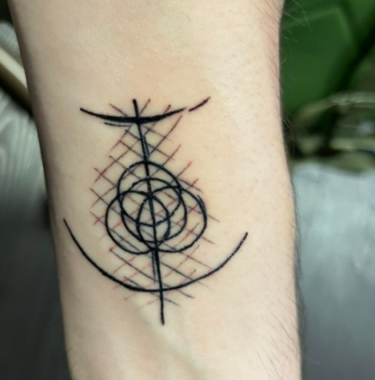

PRVO TETOVIRANJE

Nemojte gledati videe na kojima ljudi vrište od boli dok se tetoviraju. Neću vas lagati pa reći da tetoviranje boli poput ugriza komarca, ali ta bol je zaista vrlo malena.
Ljudi često pokušavaju stvoriti umjetnu hrabrost prije prve tetovaže tako da nešto popiju (alkohol ili lijekove protim bolova). Nemojte to raditi. Oboje vam raširi krvne žile te otežava tetoviranje.